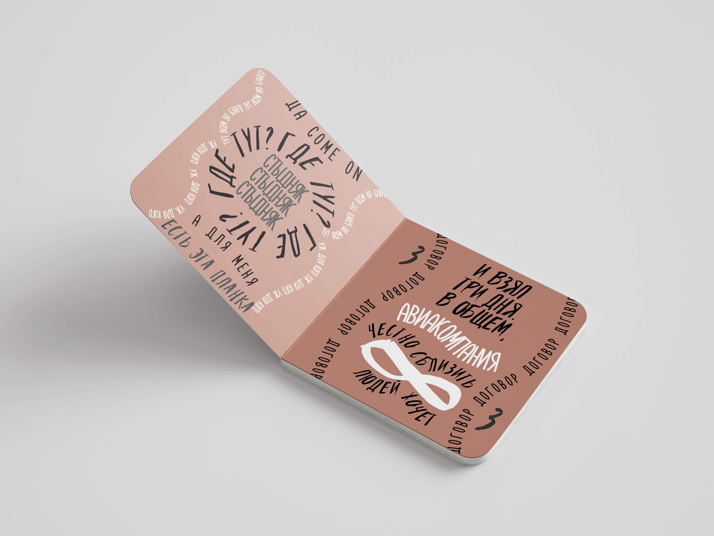
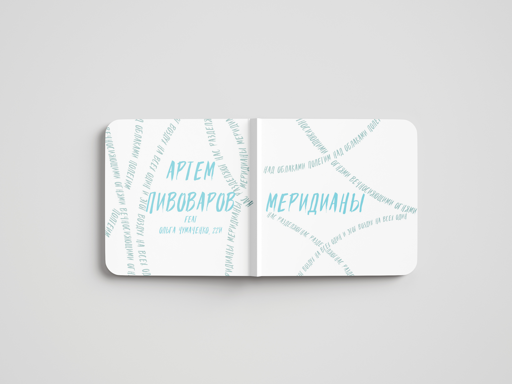

Артбук «Меридианы»
Артбук, как и песня, посвящён путешествиям и сближению людей. Смешение рэпа и инди в музыке отражается в переплетении и резком делении строк. Мягкие цвета работают на комфортное восприятие читателем. Это создаётся для тёплого воздействия, чтобы читателю захотелось позвонить близким, задуматься о том, что всех нас разделяют меридианы, которые мы можем приодолеть.
"Границы стран условны:
Путешествия необходимы"


- Ежедневно по всему миру самолеты совершают 120 тыс полетов и перевозят примерно 12 млн пассажиров. К 2023 году эта цифра могла измениться, но всё равно это слишком ошеломляет, разве нет?
- «Музыка оставляет в мозгу более глубокие «следы», нежели любой другой человеческий опыт», говорит невролог Оливер Сакс. Поэтому любая песня, заставляющая нас задуматься о каких-то внутренних вопросах, зачастую помогает и разрешить их. Музыка целительна.
- Артём Пивоваров с 2009 года работает с музыкой. Пишет тексты и исполняет их. Выпустил музыкальные альбомы, посвящённые стихиям. Трек "Меридианы" относится к Стихии Воды. Но при всей своей плавности имеет все зачатки надвигающегося шторма.
- В психологии вода отождествляется с энергией бессознательного, ассоциируется с его таинственными глубинами и таящимися в нем опасностями. А стихия воздуха отвечает за способности к духовной интелектуальной и творческой деятельности.